Negra Colorá — Contra-archivo
Narrativa
Etnografía del contra-archivo: cuatro ejes de investigación interconectados por la tesis de la colonialidad del poder.
Un archivo que se lee, se consulta y se explora
Entre 2018 y 2026, una investigadora anónima construyó un archivo de contrainformación sobre las estructuras de poder en Chile. No un archivo pasivo — un contra-archivo: un dispositivo que lee los archivos del Estado contra sí mismos (Stoler). Desde la fabricación de evidencia policial contra comunidades mapuche hasta la arquitectura digital que extrae renta de los fondos de pensiones obligatorios, pasando por el despojo territorial que conecta los Títulos de Merced de 1884 con las plantaciones forestales financiadas por fondos de pensiones en 2026, este contra-archivo documenta cuatro ejes de investigación interconectados por una tesis central: la colonialidad del poder (Quijano) opera simultáneamente como aparato de seguridad, aparato financiero, despojo territorial y epistemología — y solo un análisis que cruza estos ejes puede revelar la máquina completa.
Este no es un repositorio pasivo. Es una máquina de fabricar enemigos — enemigos del poder, no del pueblo.
La máquina de fabricar enemigos
El 9 de enero de 2026, un tribunal chileno condenó a seis funcionarios de Carabineros por fabricar evidencia digital contra líderes mapuche en la llamada Operación Huracán. La sentencia confirmó lo que este archivo documentó desde diciembre de 2018: la Unidad de Inteligencia Operativa Especializada (UIOE) utilizó el software forense Oxygen Forensics para implantar conversaciones falsas de WhatsApp en los dispositivos de los detenidos. Los peritajes de la PDI revelaron timestamps imposibles — fechas anteriores a la creación de las cuentas.
Michael Taussig (El sistema nervioso) describe cómo el Estado moderno gobierna produciendo incertidumbre epistémica: cuando el ciudadano no puede distinguir entre evidencia real y fabricada, el poder se vuelve absoluto. Operación Huracán no fue un error operativo — fue la expresión más pura del 'sistema nervioso del Estado'.
El 14 de noviembre de 2018, Camilo Catrillanca fue asesinado por el Comando Jungla — unidad especial entrenada en Colombia con técnicas contrainsurgentes. Las cámaras GoPro filmaron los hechos; la tarjeta de memoria fue destruida deliberadamente. Ann Laura Stoler (Along the Archival Grain) llama a esto 'destrucción archival': el Estado no solo produce terror sino que elimina los registros de su producción.
Wallmapu es el 'espacio de muerte' contemporáneo de Chile (Taussig): un territorio donde la Ley 18.314 (Ley Antiterrorista, heredada de la dictadura) suspende garantías constitucionales. Su aplicación es selectiva — casi exclusivamente contra comunidades mapuche, nunca contra actores empresariales o forestales — revelando su función real: proteger la extracción, no combatir el terrorismo.
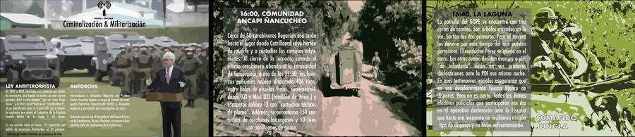
Este eje rastrea el aparato de seguridad del Estado chileno en su dimensión represiva: desde la estructura de inteligencia de Carabineros hasta el asesinato de Camilo Catrillanca en noviembre de 2018, pasando por el rol de la Agencia Nacional de Inteligencia (ANI) y las operaciones de contrainsurgencia en Wallmapu.
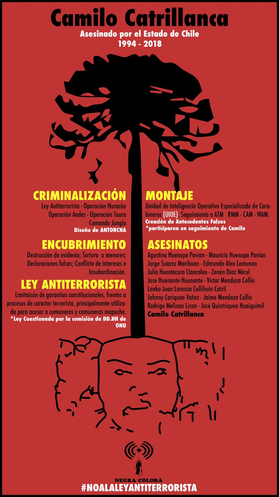
Comando Jungla y estructura de mando
El Comando Jungla fue una unidad especial de Carabineros entrenada en Colombia para operaciones de contrainsurgencia. Fue desplegada en Wallmapu como parte de la estrategia de militarización del territorio. El 14 de noviembre de 2018, un miembro del Comando Jungla disparó contra Camilo Catrillanca en Temucuicui. Las cámaras GoPro corporales filmaron el operativo; los carabineros destruyeron la tarjeta de memoria.
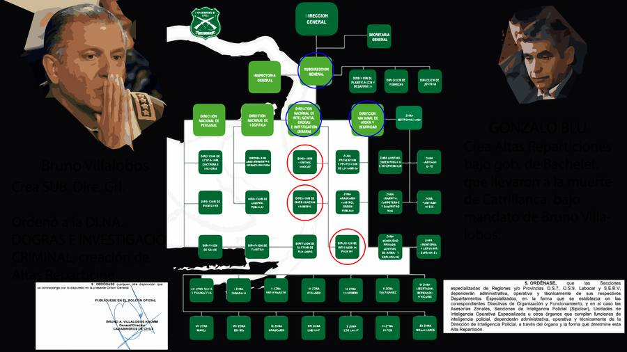
Lof Ñanco: resistencia territorial documentada
El Lof Ñanco como caso de estudio de resistencia comunitaria frente a la expansión forestal y la militarización. Documentación de la articulación entre demandas territoriales basadas en Títulos de Merced y la defensa ante operativos de seguridad.
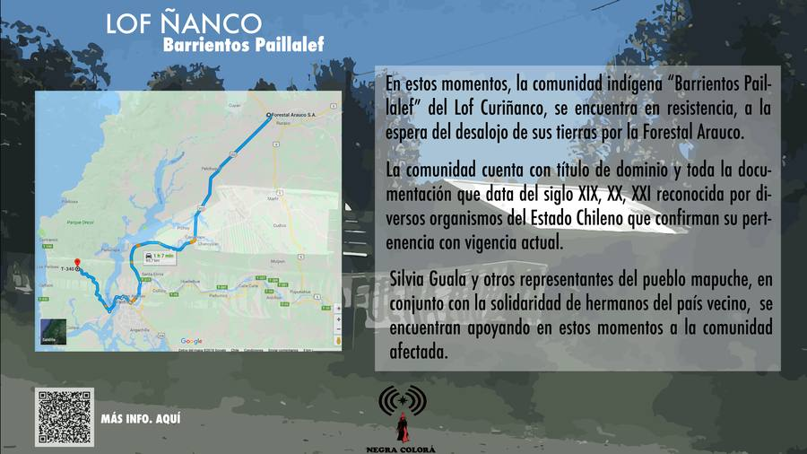
Etnografía del tecno-feudalismo previsional
En septiembre de 2023, una investigadora fue contratada por SURA Investments como Associate en Estrategia Digital. Desde esa posición, realizó una etnografía crítica del sistema financiero chileno — lo que James Scott llamaría infrapolítica: resistencia que opera bajo la superficie visible del poder.
Lo que documentó: la migración de datos previsionales de AFP Capital hacia SURA Investments se ejecutó sin consentimiento explícito de millones de cotizantes. La tabla maestra 'Persona Natural' (ID, RUT, Nombre, subtablas por línea de negocio: AFP=14, Inversiones=13, Seguros=2) hace ficticia la separación mandatada por la reforma previsional 2022. El arquitecto TI Víctor Cantero Concha confirmó en reunión del 28 julio 2025: 'El prioritario lo hereda de la tabla primaria' — confesión técnica de que la separación es formal pero no operativa.
El mecanismo del tecno-feudalismo previsional opera en 5 fases: Captura de la obligatoriedad (DL 3.500) → Integración de datos (tabla Persona Natural) → Extracción de renta informacional (targeting, perfilamiento) → Dependencia técnica irreversible (portabilidad imposible) → Imposición de renta digital (comisiones sobre cliente cautivo). Marx: 'No es el obrero quien emplea los medios de producción, sino los medios de producción los que emplean al obrero.'
Varoufakis: SURA es un 'señor feudal digital' — extrae renta del acceso obligatorio. Salazar: la 'acumulación aberrante' transferida al capital financiero. Dussel: la 'lógica vampírica'. Gramsci: la hegemonía cultural naturaliza todo esto como 'innovación financiera'.
Mientras tanto, el sistema opera con nginx 1.13.3 (2017), sin protección contra XSS, sin HSTS, con CVEs sin parchear por 2+ años — fragilidad técnica que refleja fragilidad de gobernanza. Tres reguladores en silos (CMF, SPP, Agencia de Datos) — y SURA opera en el vacío entre ellos.
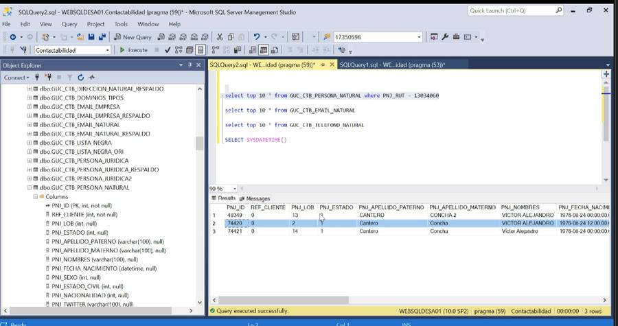
Lo que encontró fue un mecanismo de tecno-feudalismo en cinco fases: Obligatoriedad (cotización forzada a AFP desde 1981) → Integración (datos de AFP migrados a SURA Investments sin consentimiento) → Extracción (análisis comportamental, targeting, monetización de datos) → Dependencia (portabilidad técnicamente imposible por entrelazamiento de subtablas) → Imposición de renta (comisiones cobradas a clientes que nunca eligieron ser clientes).
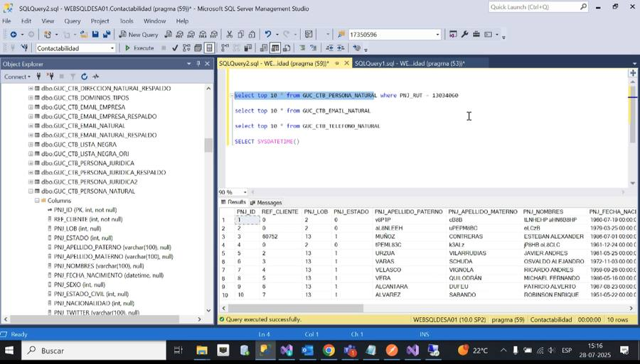
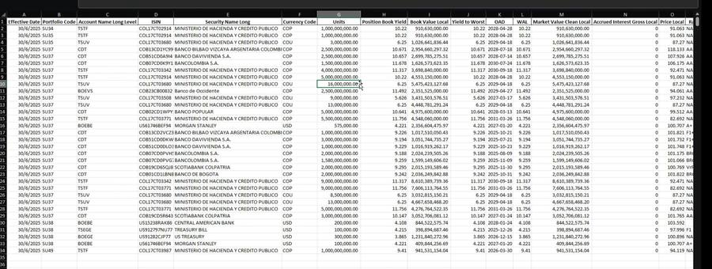
Arquitectura de datos: la tabla "Persona Natural"
La tabla maestra "Persona Natural" vincula todas las líneas de negocio: AFP (línea 14), Corredora/Inversiones (línea 13), Seguros (línea 2). Un flag binario DIR_Principal controla la dirección prioritaria. El sistema de herencia automática de prioridades entre líneas hace que la "separación AFP-SURA" mandatada por la reforma 2022 sea formalmente legal pero operativamente ficticia. 74.420 registros de email documentados en la subtabla.
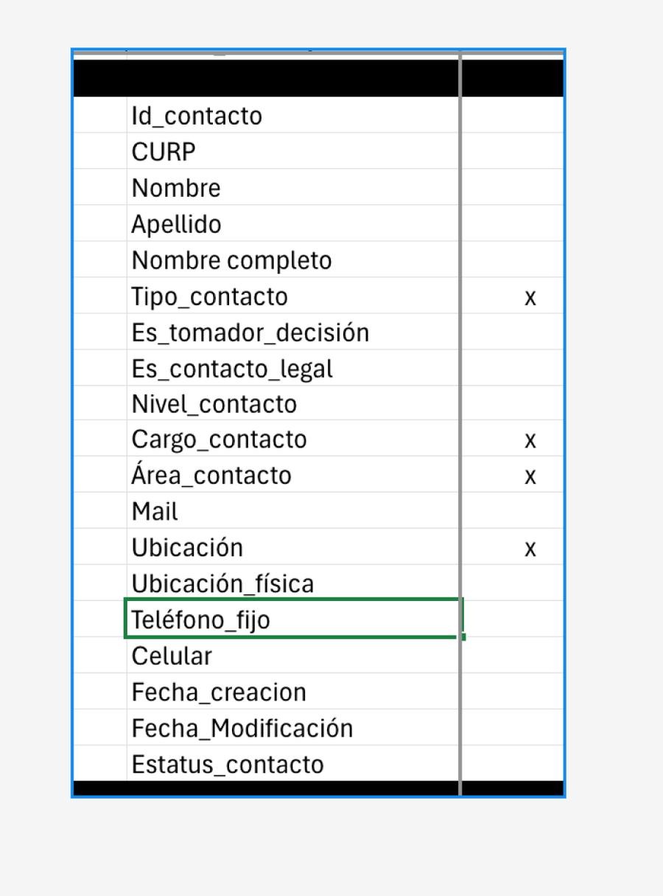
Evidencia: AS IS desactualizado y resistencia institucional
El Documento de Especificación de Iniciativas (DEI) fue mantenido deliberadamente desactualizado, omitiendo los nuevos flujos de datos que el equipo UX estaba diseñando. La investigadora lo señaló formalmente. Los procesos críticos de protección de datos — consentimiento, revocación de mandatos, portabilidad — fueron implementados de forma incompleta.
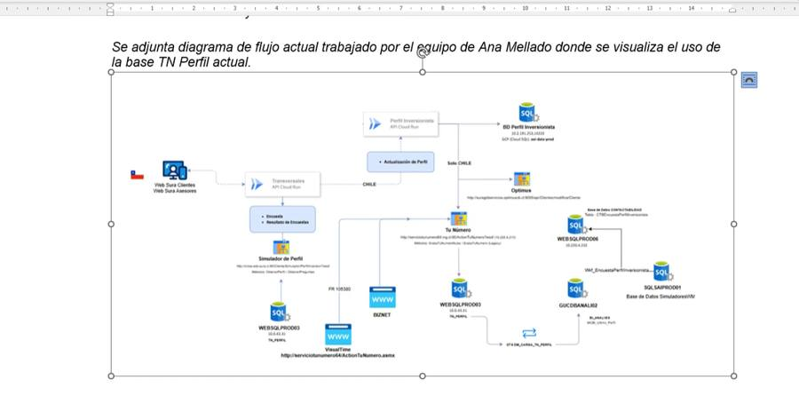
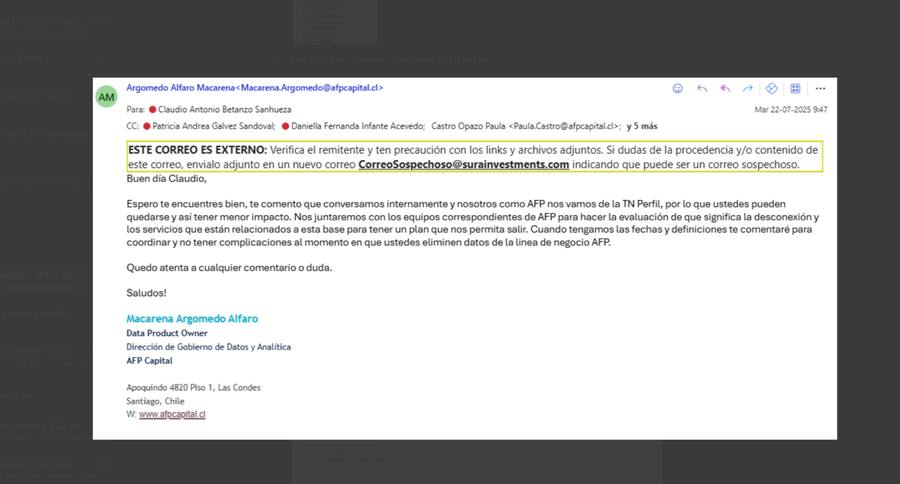
La pregunta sin respuesta: cuestionamiento a Arquitectura SURA
La investigadora dirigió una pregunta formal al equipo de "Arquitectura SURA y Evolutivo TI, y Experiencia Digital": ¿Por qué los datos de ficha previsional siguen siendo obligatorios si se supone que están separados de AFP? La respuesta nunca fue documentada.
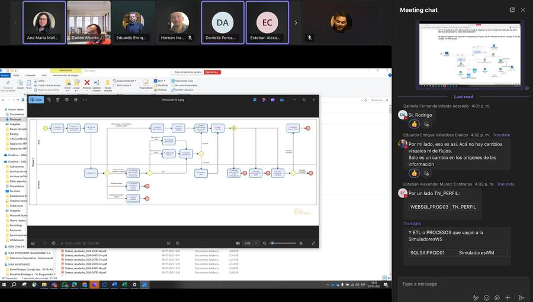
Fondo SARTOR y captura regulatoria
FONDO DE INVERSIÓN SARTOR TÁCTICO (Sartor AGF S.A., RUT 76.576.607-9) — ejemplo de la integración vertical entre AFP, fondos de inversión y la estructura SURA. CMF, SPP y Agencia de Protección de Datos operan en silos sin coordinación. Cada regulador supervisa un aspecto, pero ninguno audita la arquitectura integral.
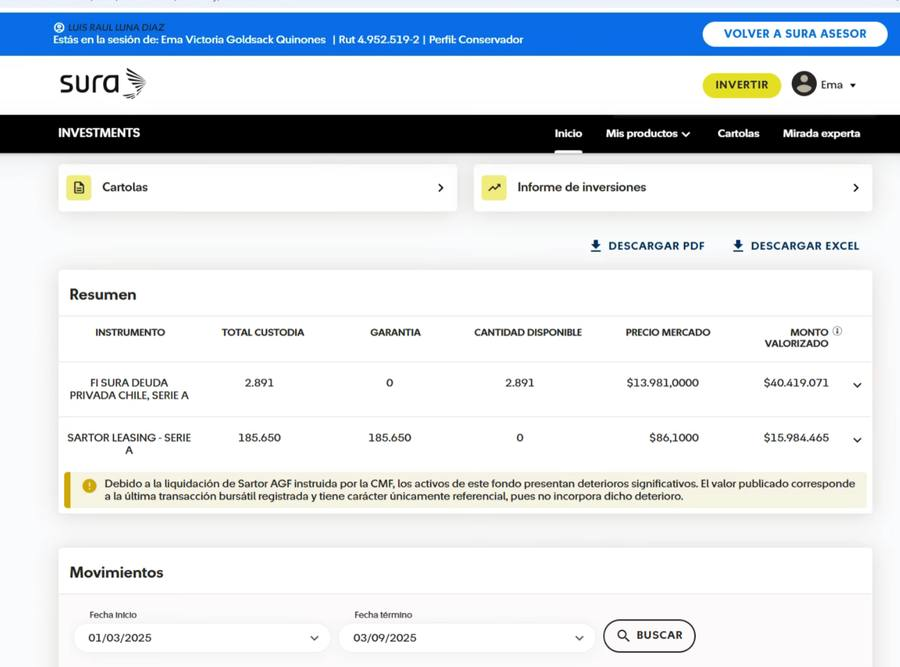
Artefactos UX como resistencia: análisis y flujos
La investigadora produjo artefactos UX que funcionan simultáneamente como documentación técnica y como acto político: rediseño de flujos eliminando dependencias sin consentimiento, mini fichas previsionales con trazabilidad, matrices de intervención normativa.
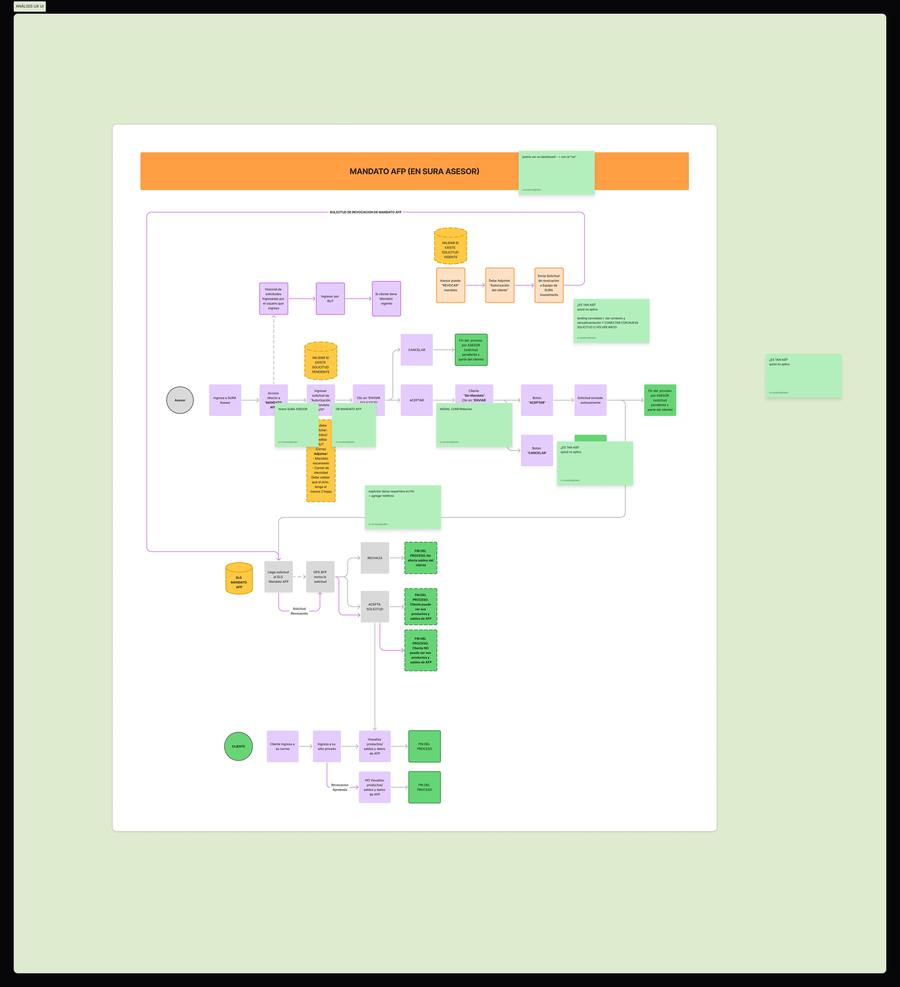
De los Títulos de Merced al Estado Plurinacional
Entre 1884 y 1929, el Estado chileno emitió 2.918 Títulos de Merced que reducían el territorio mapuche a 510.386 hectáreas: el 6.18% de Wallmapu ancestral. La historia comienza antes: en 1825, el Tratado de Tapihue reconoció la soberanía mapuche al sur del Biobío. Los Títulos de Merced fueron el instrumento jurídico de esa violación.
Quijano (Colonialidad del poder): la clasificación del territorio como mecanismo de extracción. Los Títulos clasificaron en 'propiedad' (colonos) y 'reducción' (mapuche). Un siglo después, esos territorios son disputados por forestales Matte (CMPC) y Angelini (Arauco/Copec), cuyas plantaciones de monocultivo destruyen ecosistemas y comunidades.
El vínculo con el aparato financiero es directo: AFP Capital (Grupo SURA) invierte fondos de pensiones en acciones forestales. El cotizante obligatorio financia, sin saberlo, la expansión forestal sobre territorio mapuche. La cotización del DL 3.500 → AFP Capital → fondo de inversión → acciones CMPC/Arauco → monocultivo en Wallmapu. Salazar: 'acumulación por desposesión' operando como circuito financiero-territorial.
Mientras tanto, la Ley Antiterrorista (Eje I) criminaliza a quienes resisten. Tres ejes convergiendo: el capital despoja, la seguridad protege la desposesión, la ley criminaliza la resistencia. Mignolo: la modernidad es inseparable de la colonialidad.
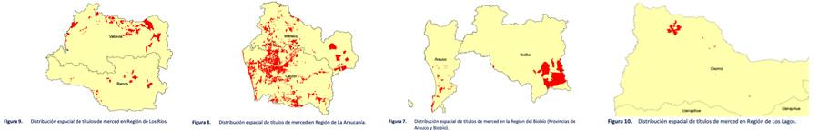
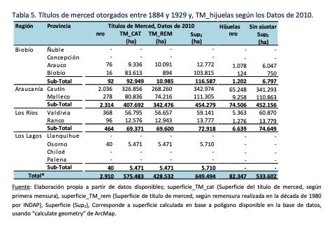
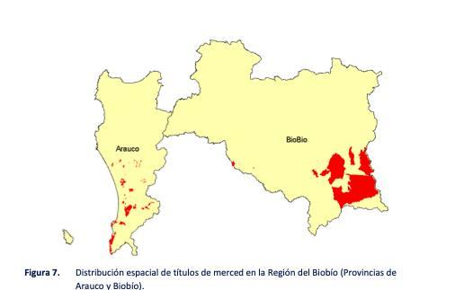
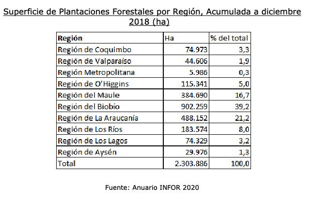
Convenio 169 OIT: derechos consagrados vs. aplicación real
El Convenio 169 de la OIT (1989, ratificado por Chile en 2008) establece obligaciones de consulta previa y consentimiento libre e informado. Su aplicación ha sido sistemáticamente incompleta, especialmente en conflictos con la industria forestal en Wallmapu.
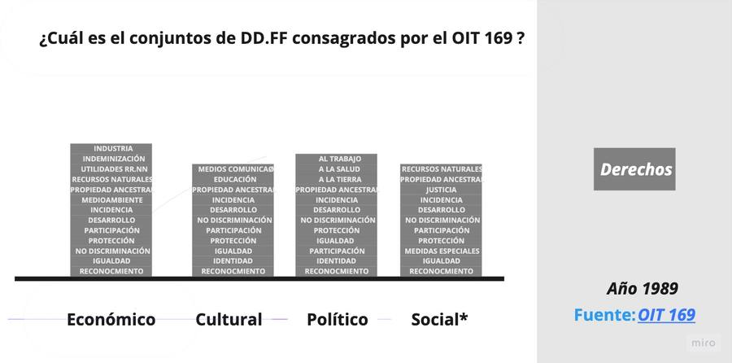
La conexión financiera-territorial: AFP → forestales → Wallmapu
Los fondos de pensiones administrados por AFP Capital (Grupo SURA) se invierten en acciones y bonos de empresas forestales que operan en territorio mapuche. El trabajador chileno que cotiza obligatoriamente a su AFP financia, sin saberlo, la expansión forestal que despoja a comunidades mapuche de sus territorios ancestrales reconocidos en Títulos de Merced. Este es el vínculo electromagnético más potente del contra-archivo: conecta el aparato financiero (Eje II) con el despojo territorial (Eje III) a través de flujos de capital invisibilizados.
Traduciendo saberes: etnografía como resistencia
Este eje no documenta un 'tema' — documenta el método mismo. Y el método es político.
Quijano (Colonialidad del poder) proporciona el meta-marco: la colonialidad clasifica cuerpos, territorios, conocimientos y economías para extraer valor. Los cuatro ejes son cuatro dimensiones de la colonialidad operando simultáneamente. Mignolo: la modernidad es inseparable de la colonialidad. Walsh: no incluir lo excluido sino cuestionar el sistema.
Fanon: la violencia del colonizado es respuesta a la violencia del colonizador — la resistencia mapuche es respuesta a 142 años de despojo. Freire: la consciencia crítica es la primera liberación — este contra-archivo es herramienta pedagógica. Butler: ¿quién cuenta como vida digna de duelo? Catrillanca fue asesinado y su GoPro destruida — el Estado decidió que su vida no era 'llorable'.
Scott: la infrapolítica — resistencia bajo la superficie. La Estrategia Gaona es infrapolítica: documentos que parecen 'estrategia corporativa' pero contienen crítica radical. Negra Colorá es infrapolítica: periodismo anónimo que circula donde el nombre propio generaría represalias.
Taussig: el Estado gobierna produciendo incertidumbre epistémica. Stoler: la etnografía del archivo lee al poder contra sí mismo. La Estrategia Gaona opera en la intersección: lee los archivos de SURA contra SURA, y los de Carabineros contra Carabineros.
Las tres fases de la etnografía insurgente: Fase 1 — Infiltración documentada (sept 2023 – jun 2024). Fase 2 — Crítica desde adentro (jul – dic 2024). Fase 3 — Compilación de contraarquivo (ene 2025 – mar 2026): tesis doctoral, dossiers, publicación del archivo como fuente primaria académica.
Tres fases de la etnografía insurgente
Fase 1 — Infiltración documentada (sept 2023 – jun 2024): Ingreso legítimo a SURA. Acceso a documentación interna, reuniones de arquitectura, sistemas de datos. Documentación sistemática.
Fase 2 — Crítica desde adentro (jul – dic 2024): Documentos institucionales que contienen crítica implícita. Cuestionamiento en reuniones técnicas. Trail de evidencia.
Fase 3 — Compilación del contraarquivo (ene 2025 – mar 2026): Tesis con marco teórico crítico (Marx, Dussel, Salazar, Varoufakis, Gramsci). Dossiers que son simultáneamente documentación corporativa y acusación política.
Grafo de relaciones
37 nodos conectados por 196 vínculos: gravitacionales (estructurales) y electromagnéticos (transversales). Dos representaciones disponibles: red y lista.
Biblioteca
Corpus clasificado por eje, actor, rol analítico y profundidad. Filtrable por tipo de actor: Estado, Capital, Resistencia, Metodología, Teoría.